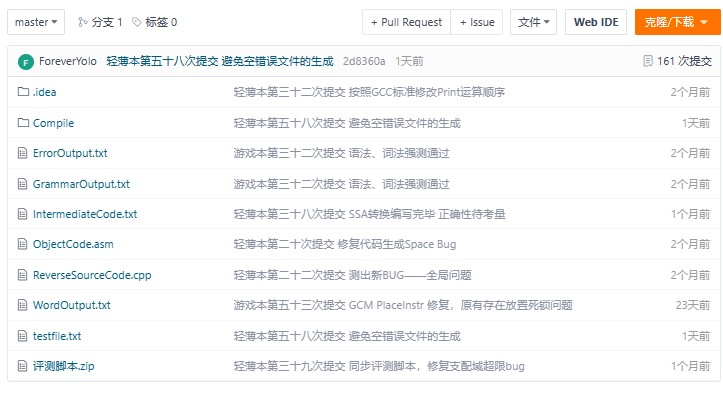
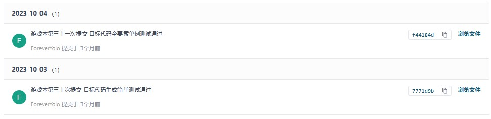
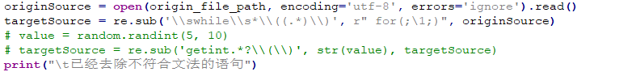

编译总结感想
编译总结
课程收获

161次提交记录…….在大二的时候久闻编译强度之大，终于在这一学期也是让我真正的亲身体会了一把，但回首这几个月，除了De不出Bug时那绝望的心情，我更多的时候收获的是每一次提交时的自豪与满足。每一次De出Bug、实现功能的成就感。对编译器的理解也是从一开始抓着别人问我该做什么，变成了我知道我该做什么，我写的哪里还有不足等等。这些提升都是实打实的提升。我对编译器的理解也是随着我实践的深入逐渐清晰，原来大一大二时在我眼里十分神秘的编译器也逐渐变得明朗。这种成长的感觉非常棒，足以抵消强度之大的流言。
而且，我认为大家都说编译强度大，我现在更多的倾向是他们没有合理安排自己的时间所导致的，因为我虽然提交次数很多，但我在一学期中并没有特别明显的感受到编译实验带来的时间上的压力，这是因为我对此在开学就有一定的规划，我听取了学长们的建议，结合自己的实际下定决心从开学开始开发，到国庆就完成了不带优化的编译器的实现。这让我后面的时间极其宽松，我甚至可以放着编译实验一周而去做更为急迫的事情。也因此虽然在最后我的时间也不是很充足，但我也不像很多人一样完全缺乏时间进行优化。让我得以取得了一个较好的竞速成绩——竞速第六。也正因为此，我觉得编译原理这门课也在教导我们要学会时间管理，强度大或许只是我们的时间管理不够到位，导致在学期末没有时间而已。

其次我想在编译课程的末尾结合我的编译器谈谈编译的五大过程——词法分析、语法分析、语义分析、中间代码生成及优化、目标代码生成及优化。
词法分析
词法分析建立了编译器与输入文件之间的桥梁，将其转换为了编译器能够识别的单词。在我的实现中，我采用正则表达式去匹配单词。完成了这一部分的工作。
语法分析
利用前面生成的单词作为输入，结合文法生成语法树。我实现的是理论所讲的递归下降分析法，对每个非终结符都建立一个类并实现解析方法，这些非终结符之间互相调用完成语法树建立。在我的实现中，我不仅对每个非终结符建立了类，为了实现优雅，对于一些较复杂的产生式，我也生成了一些新的非终结符对其进行处理：
并对这一阶段会产生的语义错误进行了处理。
语义分析
在这里我单独进行了符号表的建立，而不是边建立符号表边生成中间代码，我这么做是为了中间代码生成的顺畅进行，让其可以不考虑错误的执行。同样的，我从递归下降中学到了递归相互调用的思路，调用每个非终结符下的RunSymbolBuilder来建立符号表管理并找到语义错误。
中间代码生成及优化
生成我同样在语法树上进行，对每一个非终结符都实现了中间代码生成的方法。也是一种递归互相调用。我没有使用LLVM作为我的中间表达，我的中间表达设计参考了Yu-Ge编译器，使用了更接近Mips目标代码的中间表达，也是为了生成目标代码时的方便。这里我收获最大的是优化部分，如果说前面的设计包括后续的目标代码生成还有一点固定的思路在里面，那么代码优化就是天高任鸟飞的局面，只要有了点优化的想象力，都可以通过代码实现。我是非常喜欢这种事情的，而且在优化的过程中我也参考了很多前人的优化方法，阅读了许多英文论文，虽然读起来吃力，但我确实惊叹于他们的思路之巧妙，也给了我很多优化的启示。最终我完成了如下的优化：
更多的细节由于和优化文档重合，详情可以见我的优化文档。
目标代码生成及优化
这里就是根据目标平台的指令集进行指令选择，将自己的中间代码转换为目标平台可以执行的汇编程序。在我的实现中，我的目标平台是Mips，对Mips指令进行了选择和优化，并做了乘除和图着色、OPT分配优化。
除此之外，我继续发扬了我在CO、OO的习惯，继续写了对编译器进行自动化测试的程序。实现了自动用gcc编译运行文件得到结果与我的编译器运行结果进行对比的功能。搜集了今年和去年两年的测试库一共141例作为了测试程序，由于去年的测试库为while语句，我还对我的测试程序集成了自动处理while为for的功能：

这个测试程序帮助了我很多，大大节约了我测试的时间并极大的提高了我测试的强度。
总而言之，通过实验实打实的加深了我对理论的理解，感谢编译原理这门课提供的机会。